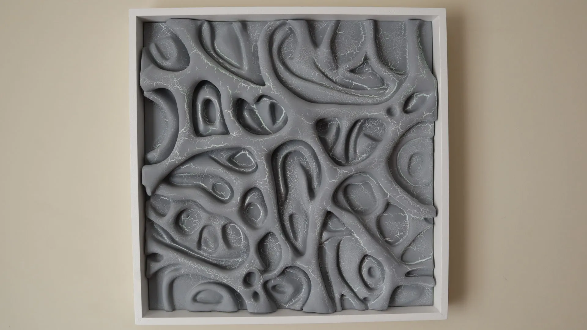
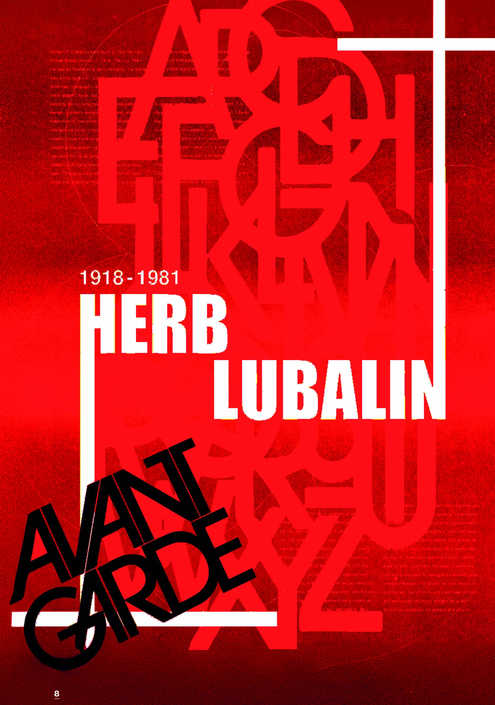
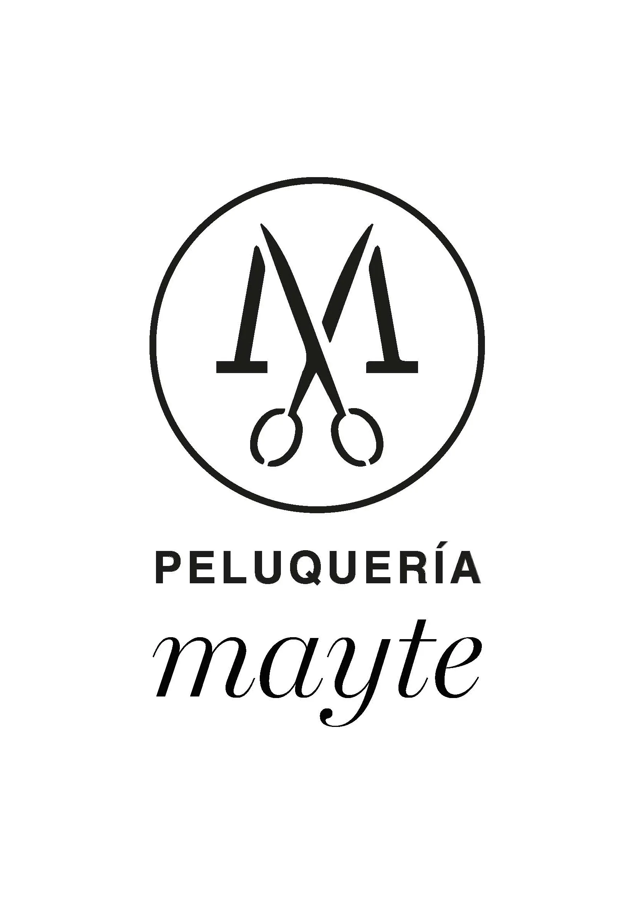
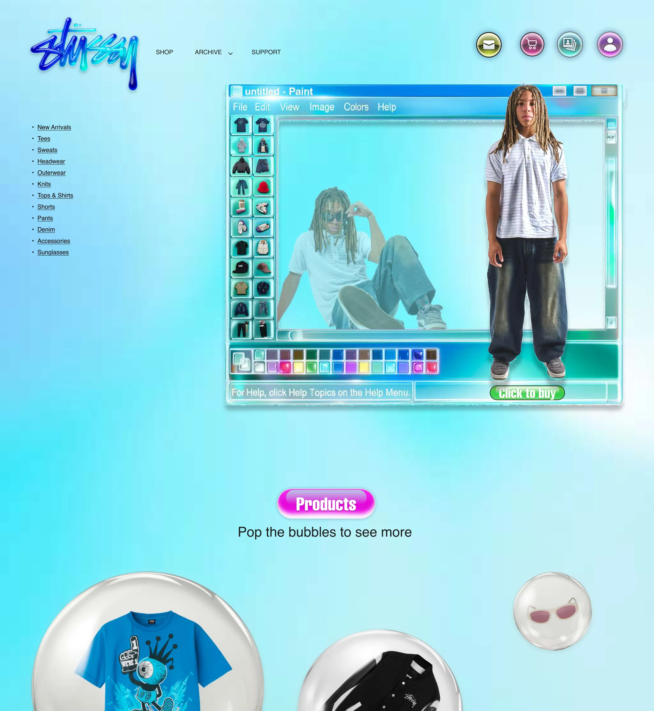
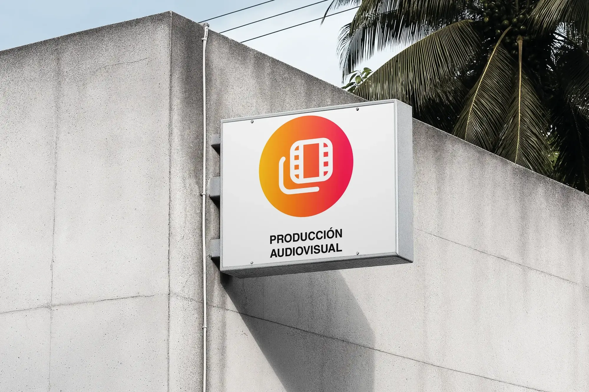
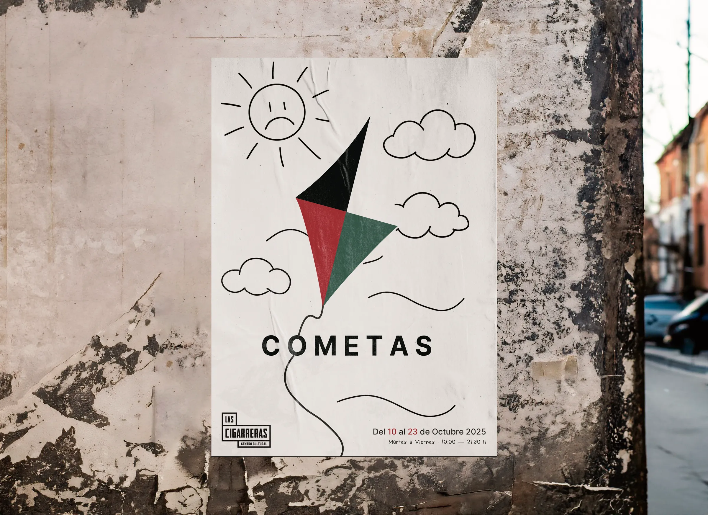
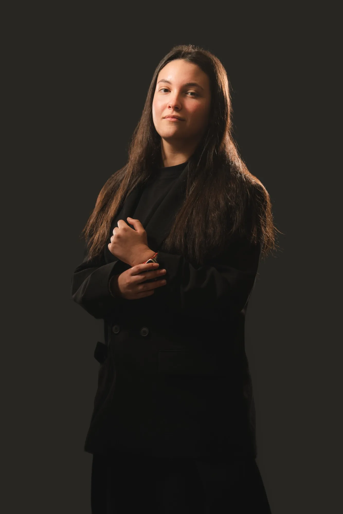

PÉREZ
HORA LOCAL0000






Diseño identidades y experiencias gráficas con intención.

Soy Belén Pérez, estudiante de 4º de Diseño Gráfico en la EASDO, en Orihuela. Trabajo identidad, diseño editorial y tatuaje de línea fina.
- Busco
- Prácticas en Alicante y Murcia, 2026/27
- blnn.przinfo@gmail.com
- belnprez
- Idioma
- English